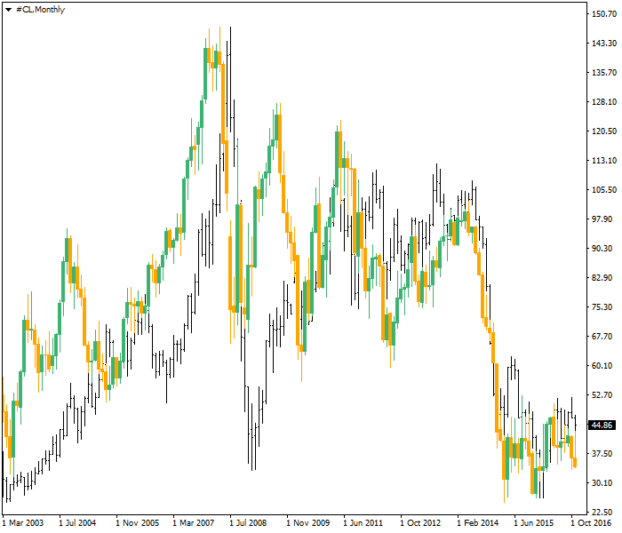
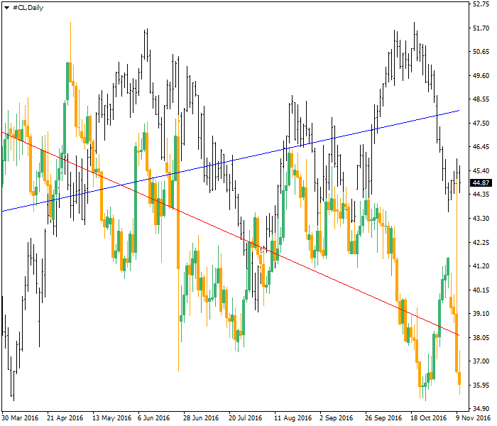
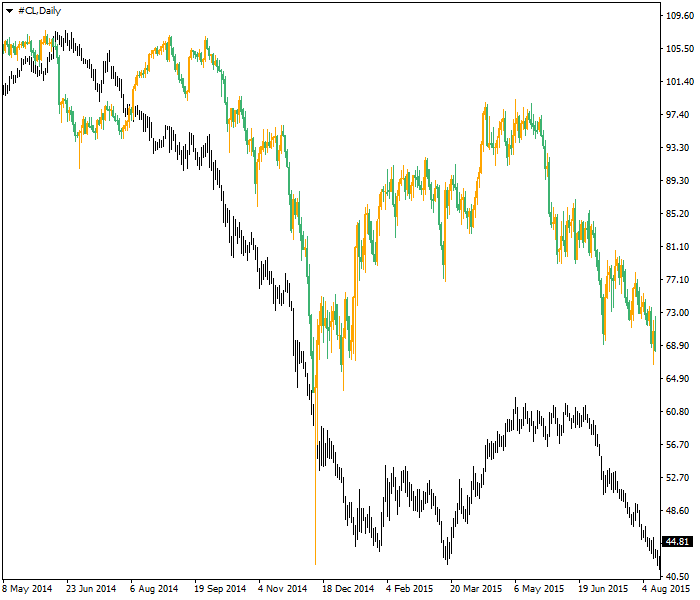
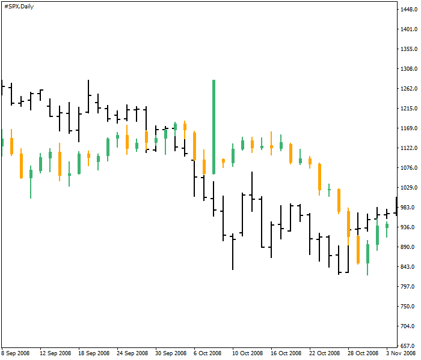

<!DOCTYPE html>
<html>
</html>
<head>
  <meta charset="utf-8">
  <meta http-equiv="X-UA-Compatible" content="IE=edge">
  <title>外汇站（fx-z.com） - 跨市场相关性</title>
  <meta name="description" content="">
  <meta name="viewport" content="width=device-width, initial-scale=1">
  <meta name="robots" content="all,follow">
  <!-- Bootstrap CSS-->
  <link rel="stylesheet" href="vendor/bootstrap/css/bootstrap.min.css">
  <!-- Font Awesome CSS-->
  <link rel="stylesheet" href="vendor/font-awesome/css/font-awesome.min.css">
  <!-- Google fonts - Roboto-->
  <link rel="stylesheet" href="https://fonts.googleapis.com/css?family=Roboto:400,300,700,400italic">
  <!-- owl carousel-->
  <link rel="stylesheet" href="vendor/owl.carousel/assets/owl.carousel.css">
  <link rel="stylesheet" href="vendor/owl.carousel/assets/owl.theme.default.css">
  <!-- theme stylesheet-->
  <link rel="stylesheet" href="css/style.default.css" id="theme-stylesheet">
  <!-- Custom stylesheet - for your changes-->
  <link rel="stylesheet" href="css/custom.css">
  <!-- Favicon-->
  <link rel="shortcut icon" href="img/favicon.png">
  <!-- Tweaks for older IEs--><!--[if lt IE 9]>
    <script src="https://oss.maxcdn.com/html5shiv/3.7.3/html5shiv.min.js"></script>
    <script src="https://oss.maxcdn.com/respond/1.4.2/respond.min.js"></script><![endif]-->
</head>
<body>
  <div id="all">
    <div class="container-fluid">
      <div class="row row-offcanvas row-offcanvas-left"> 
        <!--   *** SIDEBAR ***-->
        <div id="sidebar" class="col-md-4 col-lg-3 sidebar-offcanvas">
          <div class="sidebar-content">
            <h1 class="sidebar-heading"> <a href="https://fx-z.com">fx-z.com</a></h1>
            <p class="sidebar-p">介绍外汇相关的基本知识，告诉您如何进行自己的技术面和基本面分析，讲解先进的交易理念，并且为您阐述失败交易者与专业交易者之间的真正区别。 </p>
            <p class="sidebar-p">通过这些课程的学习，您将学会如何根据自己的优势来应用情绪分析，还将了解真实世界的事件会对货币汇率产生什么影响，央行在外汇市场中所发挥的作用，以及交易者在颇受欢迎的即期外汇交易中有哪些选择方案。 </p>
            <ul class="sidebar-menu">
                <!-- Link-->
                <li class="sidebar-item"><a href="https://fx-z.com" class="sidebar-link">首页</a></li>
                <!-- Link-->
                <li class="sidebar-item"><a href="cihui.html" class="sidebar-link">外汇词汇</a></li>
                <!-- Link-->
                <li class="sidebar-item"><a href="ebook.html" class="sidebar-link">获取外汇电子书</a></li>
            </ul>
            <p class="social"><a href="https://www.forextimechina.com.cn/zh?form=IZIN" target="_blank"data-animate-hover="pulse" class="external facebook"><i class="fa fa-eur"></i></a><a href="https://www.forextimechina.com.cn/zh?form=IZIN" target="_blank" data-animate-hover="pulse" class="external gplus"><i class="fa fa-gbp"></i></a><a href="https://www.forextimechina.com.cn/zh?form=IZIN" target="_blank" data-animate-hover="pulse" class="external twitter"><i class="fa fa-rmb"></i></a><a href="https://www.forextimechina.com.cn/zh?form=IZIN" target="_blank" title="" class="external instagram"><i class="fa fa-dollar"></i></a><a href="https://www.forextimechina.com.cn/zh?form=IZIN" target="_blank" data-animate-hover="pulse" class="email"><i class="fa fa-money"></i></a></p>
            <div class="copyright text-center text-md-left">
             
              
            </div>
          </div>
        </div>
        <!--   *** SIDEBAR END ***  -->
        <!--   *** DETAIL ***-->
        <div class="col-md-8 col-lg-9 content-column white-background">
          <div class="small-navbar d-flex d-md-none">
            <button type="button" data-toggle="offcanvas" class="btn btn-outline-primary"> <i class="fa fa-align-left mr-2"></i>菜单</button>
            <h1 class="small-navbar-heading"> <a href="https://fx-z.com/14-3.html">下一篇 </a></h1>
          </div>
          <div class="row">
            <div class="col-xl-10">
              <div class="content-column-content">
                <h1>跨市场相关性</h1>
   <p>
    通俗地说，当相关系数被统计计算为 +1 时，则两种证券之间具有完美的相关性。完美负相关性为 -1，意味着两种证券按照相反的方向运动。相关系数为零意味着一种证券的动向与另一种动向没有一致性。
</p>
<p>
    实际上，金融行业中没有什么具有完美的相关性，因为没有完全相同的证券，但我们利用两种证券之间较高的相关系数来预测一种证券跟随另一种证券做出相似的变化，无论这种变化是同步还是相反。由于所有金融证券都受到最新经济数据和其他动向的影响，相关系数成为了一种快速、低成本的用于避免耗时分析的方法。相关系数允许分析师和交易者快速得出结论。
</p>
<p>
    在外汇评论中，关于跨市场相关性的谬论多于其他内容。最令人惊奇的案例是 EUR/USD 与石油价格之间所谓的相关性。这并不是指它们不相关。WTI 石油（Reuters 连续合约）与欧元之间的相关系数确实非常高，至少大部分时间、很长一段历史以来皆是如此。其相关性显而易见：
</p>
<p>
     石油（黑色）与 EUR/USD（绿色和橙色）在每月图表上的相关性
</p>
<p>
    问题不在于相关性，而在于对它喋喋不休地盲目评论。当石油分析师无法解释石油价格走势时，他们说“石油上涨是因为美元下跌”。当外汇分析师无法解释美元上涨的特定原因时，他们说“美元上涨是因为石油下跌”。这种循环推理令人非常恼火，尤其是它忽略了油价变化的真实、持久的原因——供给与需求因素，以及 EUR/USD 价格变化的真正原因，如央行政策
</p>
<p>
    有些时候，这种说法可能是正确的——外汇交易者关注石油，而且只关注石油——但是相关系数较高的真正原因在于石油和美元受到多种因素相同程度的影响，只不过影响的方向相反。一个很好的例子是对 2008 年底金融危机的认识。在上述图表中，您可能发现其相关性在 2008 年大部分时候为负数。
</p>
<p>
    您经常可以见到石油和欧元反向运动。以下图表显示了相同的每日数据。蓝线为石油价格的线性回归线，红线为 EUR/USD 的线性回归线。它们都表示真正的趋势。经过这一时段之后，即使两种资产曾同时变动，相关系数仍低于零。
</p>
<p>
     石油（黑色）与 EUR/USD（绿色和橙色）在每日图表上的反向相关性。蓝线为石油的线性回归线；红线为 EUR/USD 的线性回归线。
</p>
<p>
    此处的经验教训在于，较长时间的高相关性并不适用于较短的时间周期。与欧元外汇交易者对应的相关系数应该适用于 15 分钟、1 小时或每日时间周期。
</p>
<p>
    接下来是关于“脱钩”的言论。如今，美国本身正成为一个主要的石油、天然气生产国，进而减少了它对国外石油的依赖性，而且将成为继沙特阿拉伯之后的第二大石油生产国。既然美国过去每个月的石油产量都在攀升，那么相关性的理论基础还没被抛弃吗？好吧，或许已经被抛弃。虽然 GDP 增长 1-2% 会得到外汇交易者的注意，但能源自给自足的主要优势在于改善美国的贸易平衡，而不是直接推动如今的外汇行业。能源价格并未包括在核心 CPI 内，因此我们无法预测其变化；鉴于美国的石油产量，即使推出出口禁令，美国也比世界上其他国家更不希望油价下跌。您要问什么是脱钩？
</p>
<p>
    我们有案例能清楚地说明跨市场相关性和因果关系。例如 2014-2015 年油价下跌时期。 随着油价下挫，挪威货币跟跌。请参见以下图表。石油用黑色表示，NOK/EUR 汇率用绿色和橙色蜡烛线表示。石油/NOK 的相关性显示，原油在挪威出口中占据着相当大的份额。油价下跌意味着流入挪威的外币减少，因而导致汇率降低。
</p>
<p>
     石油（黑色）与 NOK/EUR（绿色和橙色）在每日图表上的相关性
</p>
<p>
    这一发现惹出了一大堆麻烦。我们应注意，不能将挪威案例的同种关系归因于主要货币与出口商品的关系。挪威克朗不是主要货币之一，挪威的经济体量在国际上不算大，而且大型市场无法获得这种清晰的一对一动向。例如，1973 年以后，石油与美国股市之间的每月相关系数为 -0.003。当油价上涨时，美国股市下跌，但是将如此小的系数值用于实际目的时，我们应该将它视为零。这个案例与石油及欧元的案例相反；相关系数在短期内比较高，但长期则不然。
</p>
<p>
    另一项长期关系为美国贸易加权美元指数与标普 500 指数。1967 年之后，每月相关系数为 -0.093。这意味着强势的美元不利于美国股市，或许是因为它抑制了出口——但这么小的数值在统计上毫无价值。或许，如果数据为每日数据，而不是每月或根据较短时间计算的数据，我们至少会得到一些更高的相关系数——但这违背了通用系数的目的。
</p>
<p>
    <strong>验证数据</strong>
</p>
<p>
    如果您是数据迷，您可以利用 Excel 或类似软件轻松地进行相关性练习。不过您还应该采取下一步，即获得您相关系数的 R 平方值。创建 R 平方值（取数值的平方值）可为您计算第一个变量对第二个变量的因果关系程度。在标普和美元指数案例中，R 平方值为 0.0086，意味着美国股市的走势不能归因于美元的走势。这并不是说有些日期的有些走势具有直接的联系。例如，在 2008 年秋季美国金融危机高峰期，美元与标普 500 指数几乎同步下跌。这与“美元和标普指数反向相关”的观点截然不同，因为很明显，它们在这一时段出现了同步下跌，但这一事件说明情境始终非常重要。
</p>
<p>
    美元指数（黑色）与标普 500 指数（绿色和橙色）在 2008 年 9 月至 10 月每日图上的相关性
</p>
<p>
    您可以花很久的时间来摆弄相关性，而且许多人也是这样做的。我们经常见到许多文章提到作者发现了一些优秀、前所未有的相关性，例如大豆与铝或者其他同样古怪的东西（几乎完全不可靠）。
</p>
<p>
    关于相关性的谬论已经被予以警示，但即便市场出错，适当了解外汇市场所相信的相关性仍然有用。外汇市场倾向于相信，如果油价上涨，美元应该下跌。而且，它相信欧元与标普 500 指数具有正相关性。无论您提供多少数据给他们，这类市场传说仍然很难消除。
</p>
<p>
    <br/>
</p>
<p>
    <br/>
</p>
              </div>
            </div>
          </div>
        </div>
      </div>
    </div>
  </div>
  <!-- JavaScript files-->
  <script src="vendor/jquery/jquery.min.js"></script>
  <script src="vendor/popper.js/umd/popper.min.js"> </script>
  <script src="vendor/bootstrap/js/bootstrap.min.js"></script>
  <script src="vendor/jquery.cookie/jquery.cookie.js"> </script>
  <script src="vendor/owl.carousel/owl.carousel.min.js"></script>
  <script src="vendor/masonry-layout/masonry.pkgd.min.js"></script>
  <script src="js/front.js"></script>
</body>